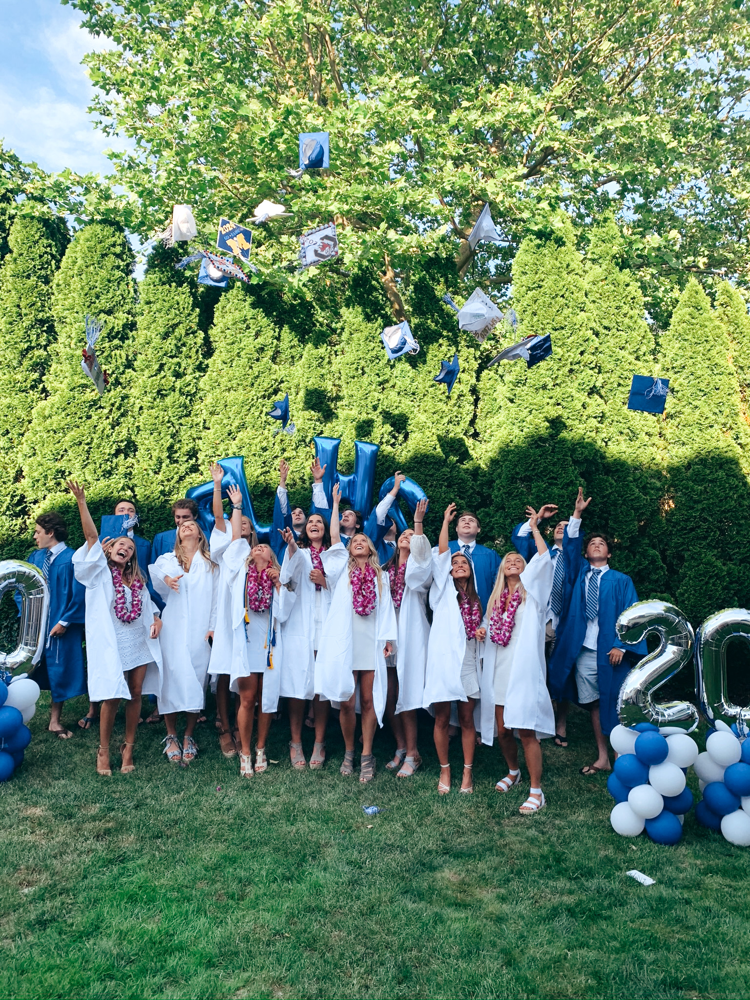
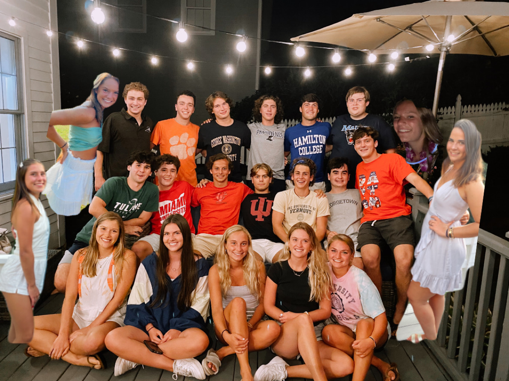
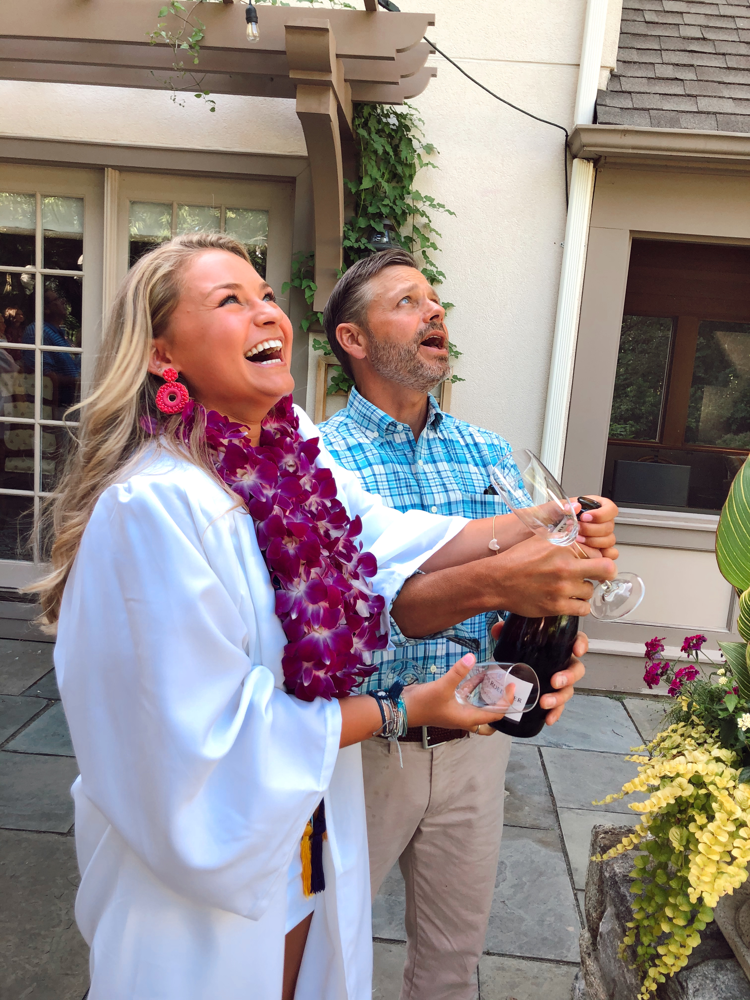
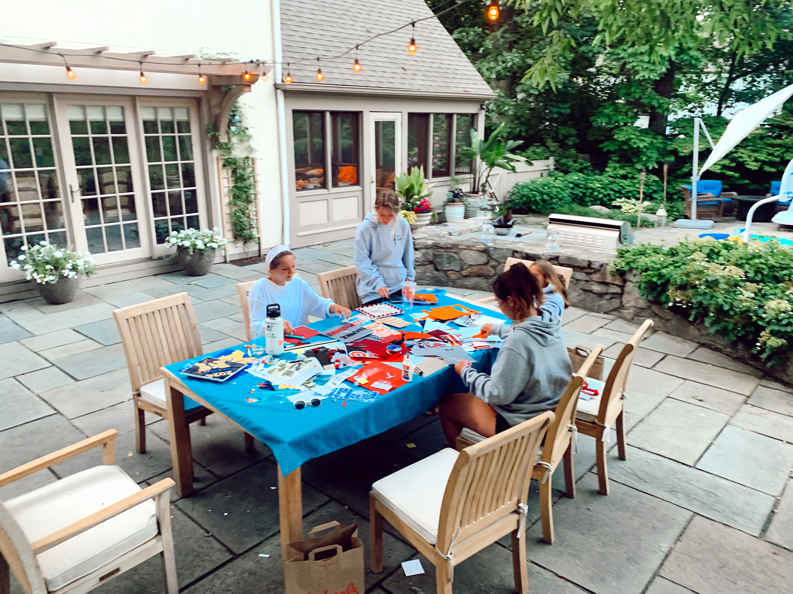
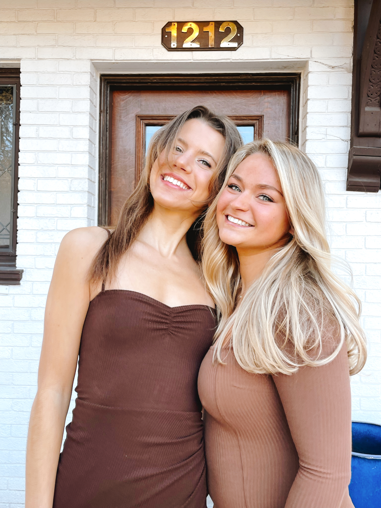
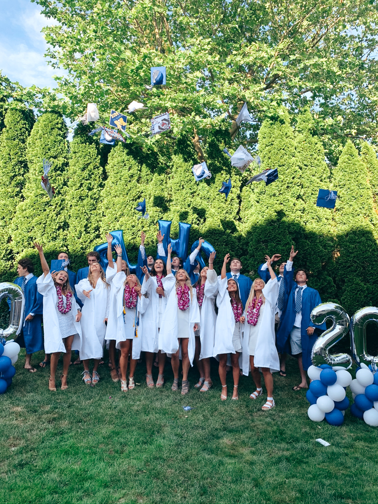
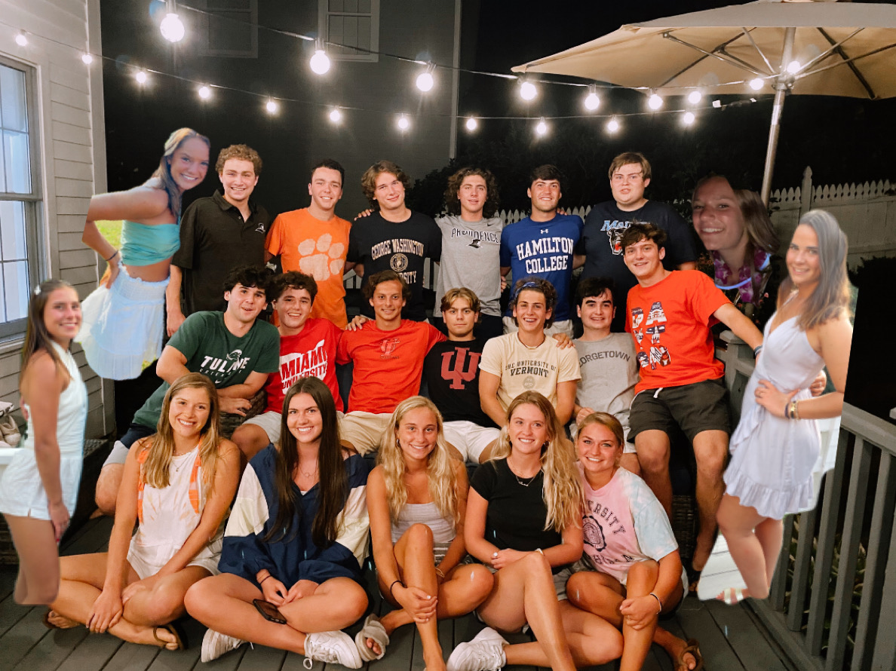
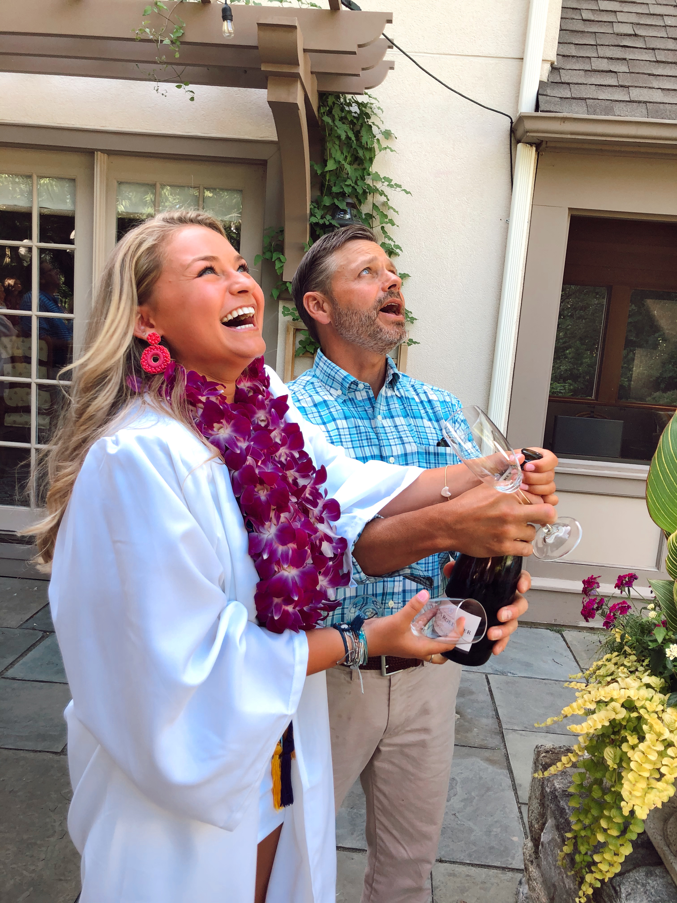
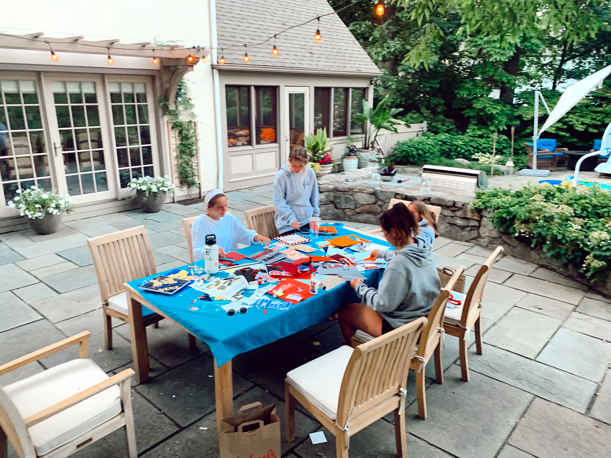
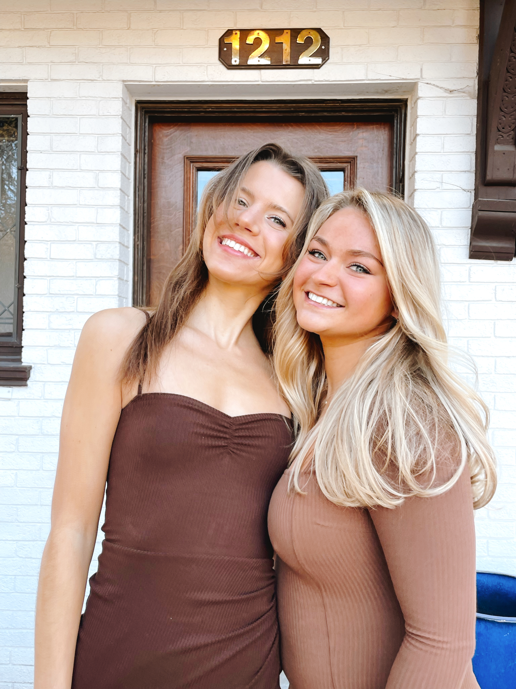

Hi, I'm Katie Valus

Hi! My name is Katie Valus. Welcome to my lifestyle page. I am excited to share with you my lifestyle, hobbies, favorite recepies, workouts, and more about my life. I am currently a student at the University of Michigan. I was born and raised in Connecticut, and love the east coast.


I have 2 brothers and amazing parents. It was hard to leave my family and come to college after I graduated highschool in 2020. Luckily, I have amazing friends who made the transition easy. I love spending time with my friends. I have so many fond memories with my friends that I cant wait to share on this blog.
`
 








